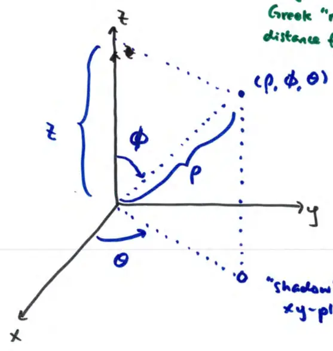

16.5 Triple Integrals in Spherical Coordinates
In spherical, we locate a point by \((\rho, \phi, \theta)\).
Greek "rho" (\(\rho\))
distance from origin to point
Greek "phi" (\(\phi\))
angle measured from z-axis down
\(\theta\)
the same \(\theta\) as in polar or cylindrical

\[ \rho \ge 0 \]\[ 0 \le \theta \le 2\pi \]\[ 0 \le \phi \le \pi \]
doesn't need to go to \(2\pi\)
"shadow" on xy-plane